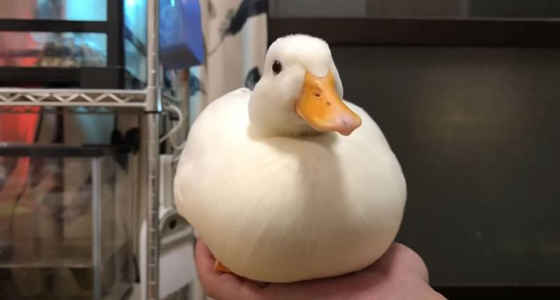
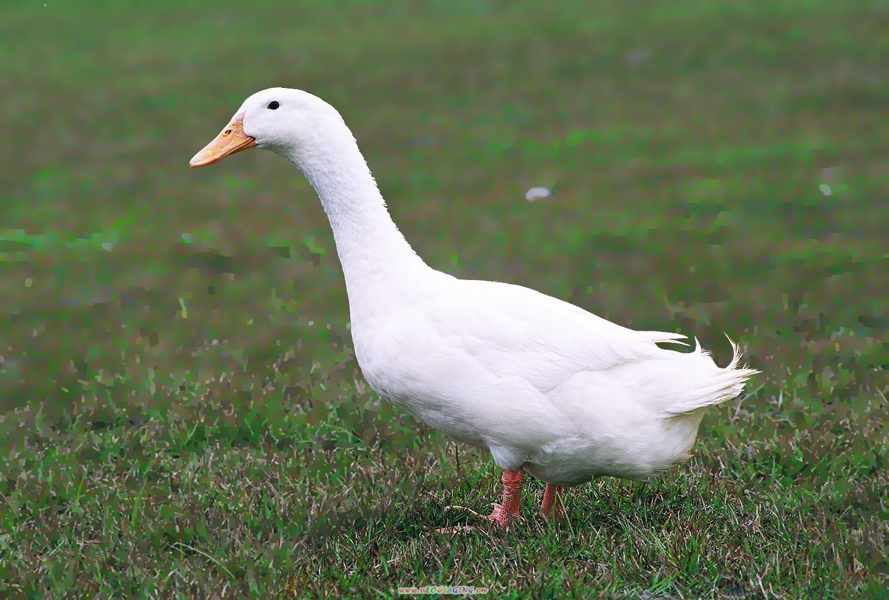
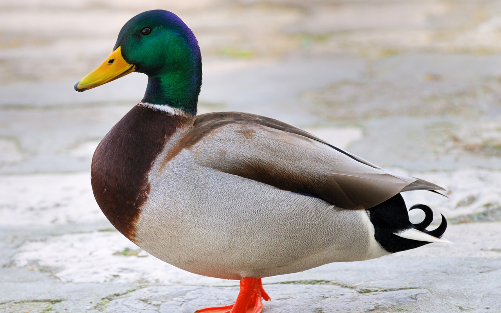

鴨子介紹

柯爾鴨（又名科爾鴨、小叫鴨，英語：Call duck）是原產於荷蘭的家鴨種類，一隻公柯爾鴨的重量可以達到570至680克左右，因其叫聲和其他鴨類有差別，柯爾鴨被用作狩獵鴨養殖，現多數用作觀賞類寵物使用。

原產於加勒比海沿岸或南美巴拉圭，於17世紀由西班牙人及葡萄牙人帶到臺灣。 特徵是臉部有紅色的肉疣，俗稱「紅面番鴨」。 早期臺灣飼養鴨隻以黑色為主，但因生長性能表現較白色番鴨差，因此現在以食用白色番鴨為主。 肉質鮮美，有特殊香味，常做成薑母鴨。

綠頭鴨 Anas platyrhynchos
在分布範圍內的典型水鴨，有水的地方隨處可見，包括城市公園，後院小溪和各種濕地棲息地。 雄鳥有綠頭，栗色胸部和灰色身體。 雌鳥帶橙色的斑駁褐色，嘴上有黑色斑點。 與綠嘴黑鴨和斑點鴨相比，藍色翼鏡前後的白色邊緣更明顯。